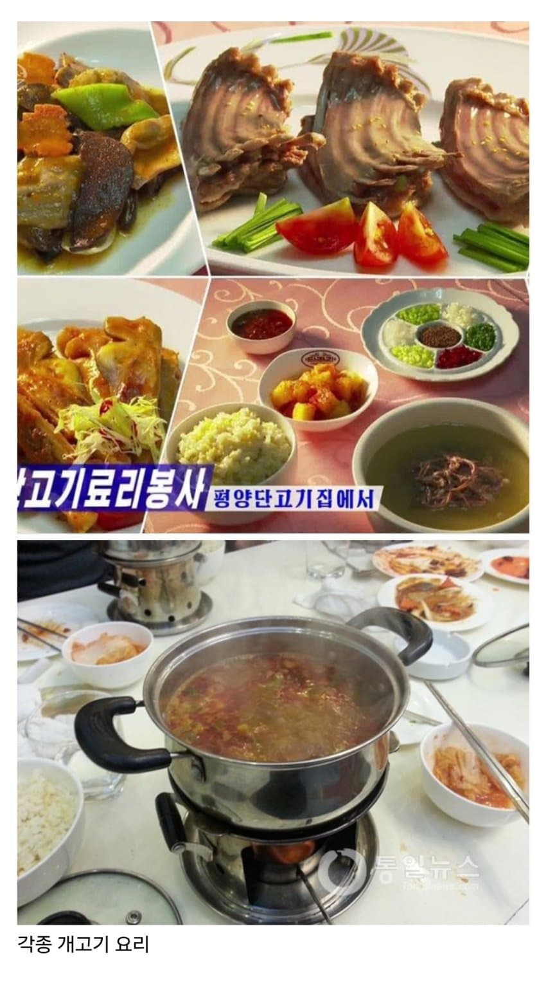
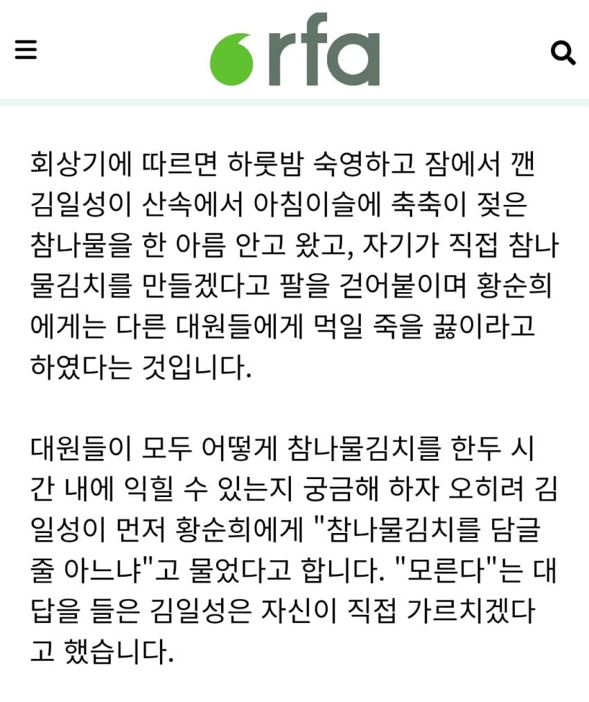
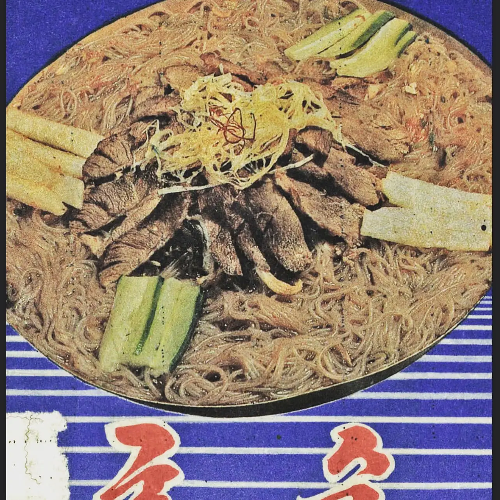
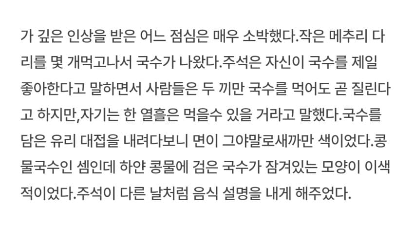
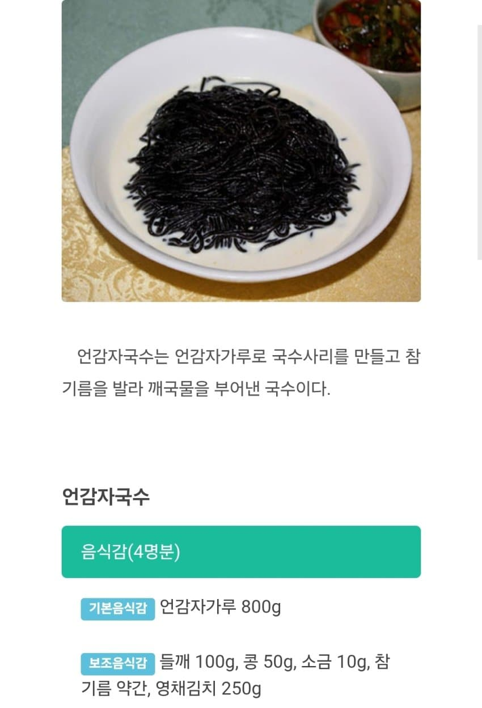
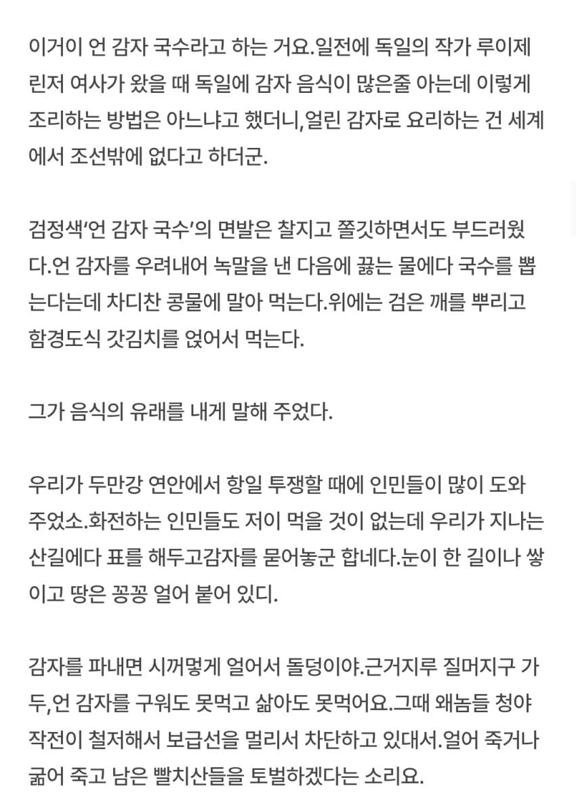

개고기
특히 개장국

참나물 김치

평양식 쟁반 국수
평양식 숭어국

모든 종류의 국수 요리

그 중 언감자국수라는 막국수를 좋아했는데

젊은 시절을 추억하며 즐겨먹었다고 전해진다.
황석영, 문선명 방북 때도 언급됐던거 오니 애지간히 좋아했던 모양






댓글
수집 당시 댓글 95개
ㅇㅇ · 11.14 20:47:09
ㅇㅇ · 11.14 20:47:10
ㅇㅇ · 11.14 20:47:11
· 싱갤용 · 11.14 20:51:09
· 수류탄이야 · 11.14 20:51:17
· 수류탄이야 · 11.14 20:51:28
· ㅇㅇ · 11.14 20:52:43
· 싱갤용 · 11.14 20:57:28
· ㅇㅇ · 11.14 23:39:36
· 신용하 · 11.17 07:11:25
· ㅇㅇ · 11.17 10:02:57
· df · 11.17 10:37:17
ㅇㅇ · 11.14 20:47:25
· ㅇㅇ · 11.14 20:47:46
ㅇㅇ · 11.14 20:48:05
소아성애자 · 11.14 20:50:42
ㅇㅇ · 11.14 20:50:51
· 개댇지 · 11.14 22:00:44
ㅇㅇ · 11.14 20:52:16
레일자이덴 · 11.14 20:57:23
· 마커스밀러 · 11.14 21:02:47
· 친일친미친중혐한 · 11.17 07:39:37
· ㅇㅇㅇ · 11.17 08:37:29
gah! · 11.14 20:57:48
· ㅇㅇ · 11.17 07:06:30
ㅇㅇ · 11.14 21:07:08
글착 · 11.14 22:10:42
밋아 · 11.14 23:55:22
ㅇㅇ · 11.15 09:03:39
ㅇㅇ · 11.15 10:36:39
말랑보추 · 11.17 07:00:52
· 파도. · 11.17 07:02:38
· ㅇㅇ · 11.17 07:54:12
봇치쟝 · 11.17 07:00:56
· ㅇㅇ · 11.17 07:08:00
아니미 · 11.17 07:02:27
파도. · 11.17 07:02:32
· 말랑보추 · 11.17 07:02:49
· ㅇㅇ · 11.17 07:53:54
실베도로롱 · 11.17 07:05:56
· 실베도로롱 · 11.17 07:06:19
· ㅇㅇ · 11.17 07:52:48
Cast_Away · 11.17 07:06:42
ㅇㅇ · 11.17 07:07:44
ㅇㅇ · 11.17 07:09:55
· ㅇㅇ · 11.17 07:39:46
· ㅇㅇ · 11.17 07:49:31
ㅇㅇ · 11.17 07:12:00
ㅇㅇ · 11.17 07:16:08
ㅇㅇ · 11.17 07:17:43
ㅇㅇ · 11.17 07:18:54
ㅇㅇ · 11.17 07:23:17
ㅇㅇ · 11.17 07:36:14
2456778 · 11.17 07:37:49
· ㅇㅇ · 11.17 07:53:00
2456778 · 11.17 07:37:58
올이삯 · 11.17 07:38:42
ㅇㅇ · 11.17 07:52:41
· 파도. · 11.17 08:00:13
· 말랑보추 · 11.17 08:44:34
ㅇㅇ · 11.17 07:57:39
번개장터 · 11.17 08:12:13
· ㅇㅇ · 11.17 08:19:53
ㅇㅇ · 11.17 08:13:34
· ㅇㅇ · 11.17 08:19:46
ㅎㅎ · 11.17 08:23:27
ㅇㅇ · 11.17 08:24:55
ㅇㅇ · 11.17 08:30:44
김일성
개새끼
ㅇㅇ · 11.17 08:54:20
원산 · 11.17 09:01:22
· 00 · 11.17 09:55:02
· 원산 · 11.17 09:55:56
ㅇㅇ · 11.17 09:51:43
황군의 청야전술은 세계제일
ㅇㅇ · 11.17 10:21:25
ㅇㅇ · 11.17 10:23:15
삭제됨 · 11.17 10:59:20
· ㅇㅇ · 11.17 12:20:18
ㅇㅇ · 11.17 11:04:57
ㅇㅇ · 11.17 11:16:23
ㅇㅇ · 11.17 11:45:34
ㅇㅇ · 11.17 11:57:17
· ㅇㅇ · 11.17 13:52:53
· ㅇㅇ · 11.17 14:24:54
orthodox · 11.17 12:03:24
ㅇㅇ · 11.17 12:46:58
ㅇㅇ · 11.17 12:49:51
1111 · 11.17 12:58:28
ㅇㅇ · 11.17 13:33:03
ㅇㅇ · 11.17 13:38:55
ㅇㅇ · 11.17 15:14:21
2찍 = 북한에 집착함
· ㅇㅇ · 11.17 15:14:40
김일성 식단까지 궁금해함
· ㅇㅇ · 11.17 15:15:23
ㅇㅇ · 11.17 16:39:53
ㅇㅇ · 11.17 17:49:02
ㅇㅇ · 11.17 20:32:17